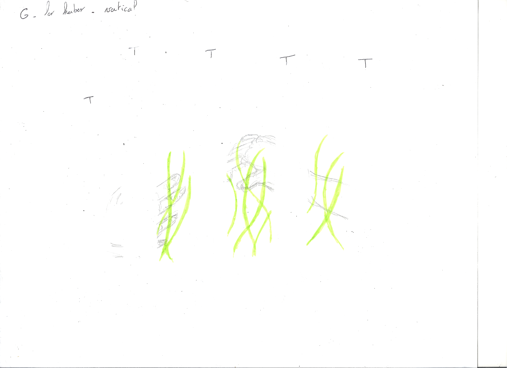
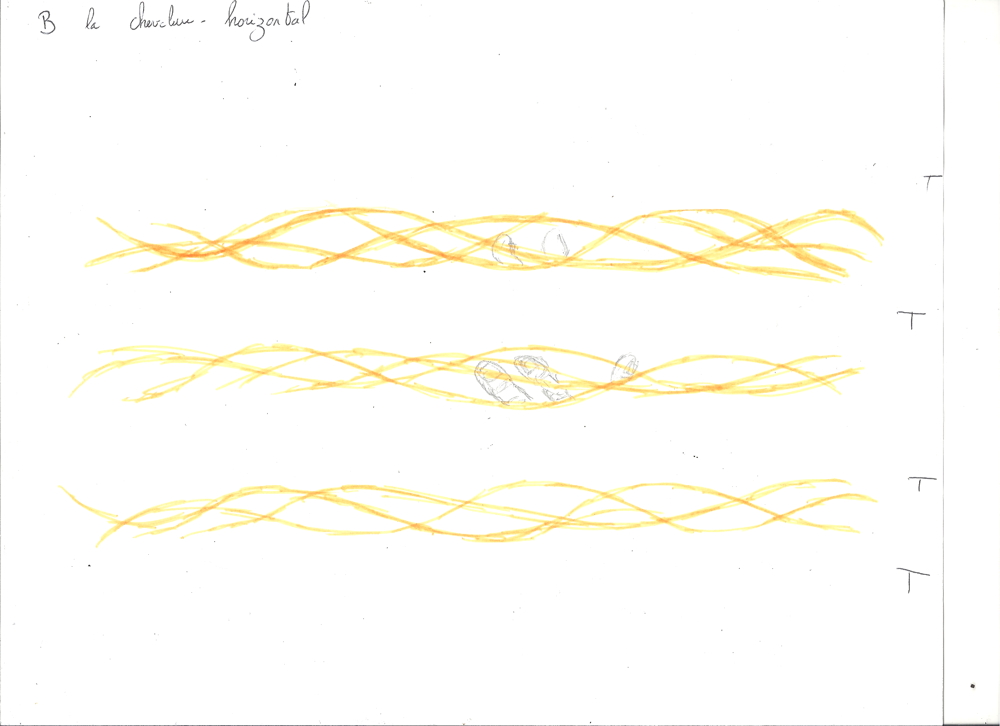
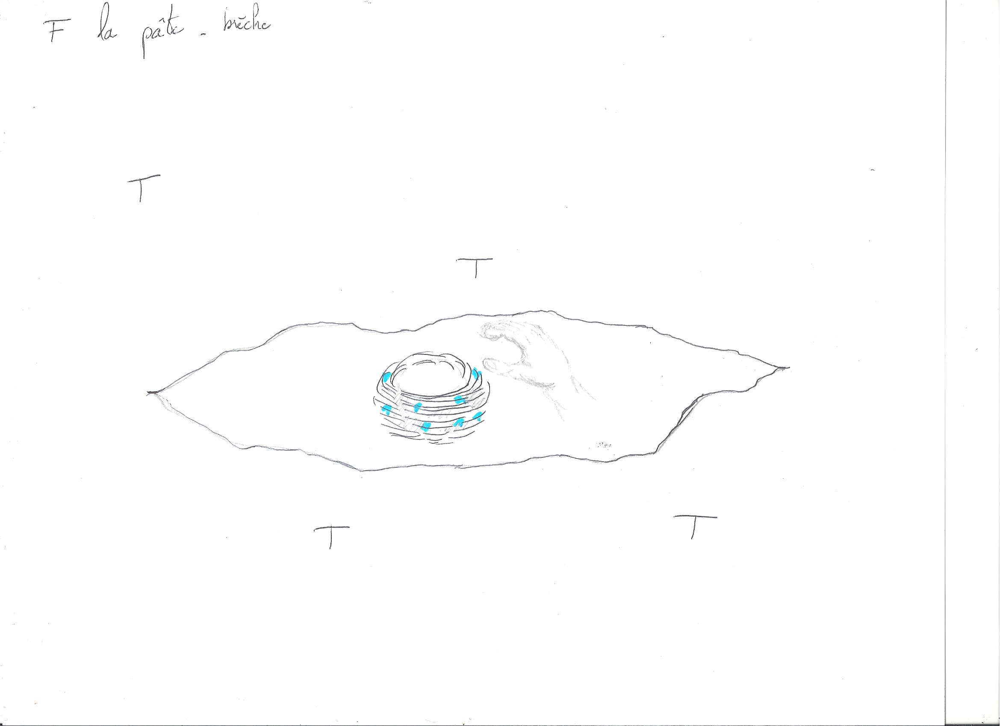
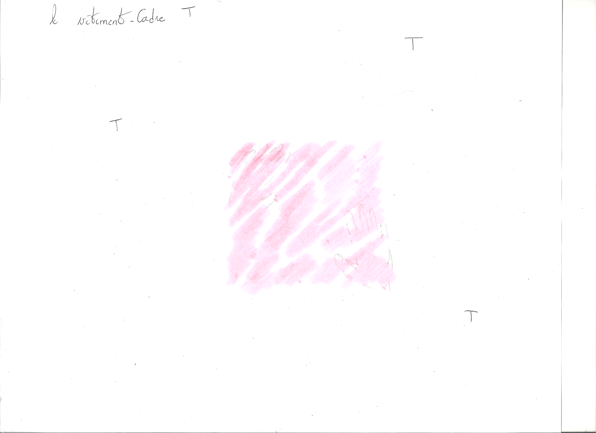
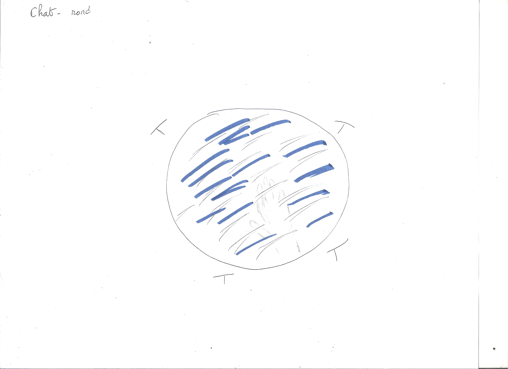

Série d’illustrations pour la page des projets de l'Organon, collectif issu de la Chaire McConnell en recherche et création sur les récits du don et de la vie en contexte de soins.
L’idée de la création proposée était de parvenir à concevoir des images qui font du bien, qui habillent un espace d’expression sans être trop là, de penser la relation entre l’écriture et le toucher dans une perspective de poiesis.
Résultent de ces objectifs les Pansemains qui sont la déclinaison de gestes des mains sur différentes matières du monde. Abbréviation [pansement] [main] [pensée], ces images ont pour approche de fondre la main dans une matière par le geste qu’elle opère.
Chaque pansemain se structure pas strates : le dessin de la main sur page vierge blanche, la matière concrête, une page calque découpée1.
À une matière un geste, une figure et un modèle de structuration : les herbes verticales et montantes ; les cheveux horizontaux et longeant ; la glaise informe et irrégulière ; le tissu carré et droit ; l’eau ronde et lisse ; la peau rectangle et portrait.
Les preuves de concepts applanissent les strates #
Pansemain 1 #

Publié en ligne sur la page Université d’été
Pansemain 2 #

Publié en ligne sur la page RéCITS
Pansemain 3 #
 La pâte a été remplacée par la terre.
Publié en ligne sur la page Soigner son monde
Pansemain 4 #

Publié (bientôt) en ligne sur la page Souci de l’Autre
Pansemain 5 #
 Le chat a été remplacé par l’eau.
Publié (bientôt) en ligne sur la page Récits infectés
Pansemain 6 #
Le Pansemain 6 n’a pas de preuve de concept et a été fait sur le vif.
Publié en ligne sur la page Récits du don et de la vie en contexte de soin
Mode opératoire #
Mon mode opératoire a été le suivant :
- je me suis remise au dessin ;
- j’ai collecté mes matières du monde ;
- j’ai fabriqué mes calques : oindre les pages avec de l’huile, laissez sécher sur des planches en bois ;
- j’ai numérisé les pansemains.
Une numérisation one shot #
Parce que le dessin de la main est crayon-papier, parce que la page calque est encore grasse de son onction, parce que les matières y adhèrent, la numérisation n’a pas connu de répétition. Elle était un moment de performance des preuves de concept.
-
Malheureusement disparus lors de la numérisation, des bouts de scotch devaient figurer sur les brouillons la présence de la page calque. ↩︎